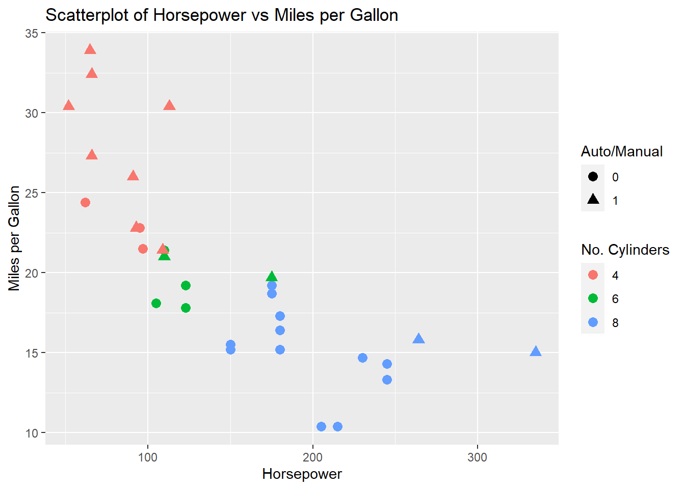

I have been a big fan of Hadley Wickham’s ggplot package for a while. This last week I was building a shiny app and wanted to find out exactly which colours were being used in the plot. After a bit of googling I ended up at this stackoverflow post, which led me to the ggplot_build function which I found seriously useful.
A little demo:
library(ggplot2)
# create a sample plot
p = ggplot(mtcars, aes(x = hp, y = mpg, colour = factor(cyl), shape = factor(am))) +
geom_point(size = 3) +
labs(colour = "No. Cylinders", shape = "Auto/Manual",
x = "Horsepower", y = "Miles per Gallon",
title = "Scatterplot of Horsepower vs Miles per Gallon")
# and display it
p
One way we can look at what info ggplot is using to make the plot is with the ggplot_build() function. This outputs a list of, amongst other things, a data frame of all the aesthetics.
# we can use the ggplot_build function to have a look at exactly what information ggplot is using
# to construct the plot
ggplot_build(p)$data## [[1]]
## colour shape x y PANEL group size fill alpha stroke
## 1 #00BA38 17 110 21.0 1 4 3 NA NA 0.5
## 2 #00BA38 17 110 21.0 1 4 3 NA NA 0.5
## 3 #F8766D 17 93 22.8 1 2 3 NA NA 0.5
## 4 #00BA38 16 110 21.4 1 3 3 NA NA 0.5
## 5 #619CFF 16 175 18.7 1 5 3 NA NA 0.5
## 6 #00BA38 16 105 18.1 1 3 3 NA NA 0.5
## 7 #619CFF 16 245 14.3 1 5 3 NA NA 0.5
## 8 #F8766D 16 62 24.4 1 1 3 NA NA 0.5
## 9 #F8766D 16 95 22.8 1 1 3 NA NA 0.5
## 10 #00BA38 16 123 19.2 1 3 3 NA NA 0.5
## 11 #00BA38 16 123 17.8 1 3 3 NA NA 0.5
## 12 #619CFF 16 180 16.4 1 5 3 NA NA 0.5
## 13 #619CFF 16 180 17.3 1 5 3 NA NA 0.5
## 14 #619CFF 16 180 15.2 1 5 3 NA NA 0.5
## 15 #619CFF 16 205 10.4 1 5 3 NA NA 0.5
## 16 #619CFF 16 215 10.4 1 5 3 NA NA 0.5
## 17 #619CFF 16 230 14.7 1 5 3 NA NA 0.5
## 18 #F8766D 17 66 32.4 1 2 3 NA NA 0.5
## 19 #F8766D 17 52 30.4 1 2 3 NA NA 0.5
## 20 #F8766D 17 65 33.9 1 2 3 NA NA 0.5
## 21 #F8766D 16 97 21.5 1 1 3 NA NA 0.5
## 22 #619CFF 16 150 15.5 1 5 3 NA NA 0.5
## 23 #619CFF 16 150 15.2 1 5 3 NA NA 0.5
## 24 #619CFF 16 245 13.3 1 5 3 NA NA 0.5
## 25 #619CFF 16 175 19.2 1 5 3 NA NA 0.5
## 26 #F8766D 17 66 27.3 1 2 3 NA NA 0.5
## 27 #F8766D 17 91 26.0 1 2 3 NA NA 0.5
## 28 #F8766D 17 113 30.4 1 2 3 NA NA 0.5
## 29 #619CFF 17 264 15.8 1 6 3 NA NA 0.5
## 30 #00BA38 17 175 19.7 1 4 3 NA NA 0.5
## 31 #619CFF 17 335 15.0 1 6 3 NA NA 0.5
## 32 #F8766D 17 109 21.4 1 2 3 NA NA 0.5I found this very useful to double check that all the things I was expecting to happen, were actually happening and in to solve my particular problem of finding out exactly which colours I was using. For more detail on all the information ggplot_build can provide have a look at the docs.